Jungle Compound
Ласкаво просимо до джунглів! Суспільство оголосило вас загрозою, тому ми віддалили вас від будь-яких слідів.
Перш ніж навіть розважитись думкою про втечу, дозвольте нагадати, що навіть якщо за допомогою якогось
віддаленого шансу ви проїдете повз огорожу, стіну, перимітерні джипи та сторожовий пропускний пункт, в дикій
природі за її межами немає жодного вцілілого.
~ Університет Джим Стерлінг по прибуттю в'язниці
Jungle Compound - четверта карта, присутня в грі, перед якою перейшов штат Шенктон, а наступник Сан Панчо .
Він має труднощі середньої тяжкості, що є більш складним, ніж більшість. На карті представлена тюрма на
відкритому повітрі, оточена густими джунглями. Ця карта може базуватися на таборі в'язниць Патет Лаос в
Лаосі.
В'язниця утримує 10 ув'язнених , 5 офіцерів та 4 охоронців вежі. У в'язниці також є склад із листом металу
та деревини . У кожній камері є 2 ув'язнених.
Ви можете виявити навколишні джунглі занадто товсті для навігації, що змусить шукати інші шляхи втечі. Біля
південного краю карти знаходиться блокпост із воротами та озброєною охороною. Щоб вас звільнили, ви повинні
надати офіцеру підписані документи . Після затвердження ворота відкриваються і ваш втечу завершено. Можна
також просто створити тунель, який йде під ворота (під час носіння охоронної форми), оскільки охоронець не
помітить, що ви копаєте.
Jungle Compound також має власну унікальну музику у вільний час.
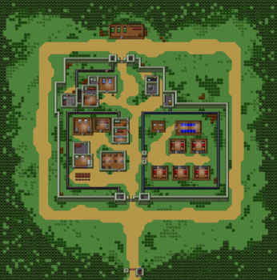
Розклад
| 8:00-9:00 |
Ранковий Rollcall |
| 9:00-10:00 |
Сніданок |
| 10:00 - 13:00 |
Період роботи |
| 13:00 - 14:00 |
Період вправ |
| 14:00 - 17:00 |
Безкоштовний період |
| 17:00 - 18:00 |
Вечеря |
| 18:00 - 21:00 |
Період роботи |
| 21:00 - 22:00 |
Душ |
| 22:00 - 23:00 |
Вечірній поклик |
| 23:00 - 08:00 |
Відбій |
Вакансії
- Позиція садівника (за замовчуванням)
- Положення пральні
- Позиція людини
- Посада бібліотекаря
- Встановлення одягу
Елементи
Ремесла (та продукти харчування)
- Ідентифікаційні документи
- Не підписані документи для посвідчення особи
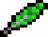
Екзотичне перо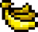
Банани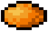
Манго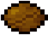
Кокосовий горіх- Племінний барабан
Рецепти
| Пункт
|
Вимоги |
Розвідка
|
Ідентифікаційні
документи |
Не підписані документи для посвідчення особи + банку з чорнилом + екзотичне
перо
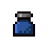 |
60 |
Стратегії
Пропонована робота: Бібліотека або пошта
Підготовка:
- Створіть ліжко-манекен .
- Знайдіть ролик стрічки і журналу, щоб зробити плакат .
- Grab 5 пластикових виделок . Потім перейдіть до бібліотеки.
- Відведіть стіну зліва, щоб ви могли дістатися до тунелю з технічного обслуговування ( зона утиліти )
- Cover отвори вгору з плакатом . ПРИМІТКА. Щоб позбутися від стінового блоку, ви можете або покласти
його в тунель (щоб прикрити яму, яку ви будете викопати), або покласти його в засудженого. Зробіть
це і для іншої стіни.
- Придбайте чашку , батончик шоколаду та запальничку . Поєднайте їх у чашку розплавленого шоколаду .
Або отримайте свою фізичну статистику понад 70 і отримайте хорошу зброю!
- Створіть ват із шпаклівки та розплавленого пластику .
- Прокачайте свій інтелект до 80+.
- Знайдіть охорону за допомогою клавіші стільника (жовтий ключ) і вийміть його з чашки розплавленого
шоколаду .
- Складіть клавішу клітини за допомогою шапки шпаклівки . Це дасть вам форму клавіатури клітинки та
ключ комірки . Візьміть плесень для клавіатури, а потім з'єднайте з розплавленим пластиком . Це
надасть вам пластиковий комірок .
- Покладіть мобільний ключ назад в кишеню охоронця, інакше вас відправлять прямо в одиночний !
- Зробіть те ж саме з охоронцем з ключем персоналу (червоний ключ).
- Створіть ще один плакат і отримайте ще 5 пластикових виделок .
- Чіпніть ліву частину коридору корисного господарства, щоб ви могли потрапити на склад необмеженого
бруса та листа металу. Закрийте отвір плакатом!
- Забезпечте гардеробне спорядження та стандартний чохол для контрабанди або міцний контрабандний
чохол ,
- Купити хороший інструмент для копання / відколу. Мультитул буде найшвидшим, але пластикова ложка ,
міцна лопата або міцний пікакс зроблять трюк.
- Виберіть екзотичне перо і банку чорнила . Тримайте їх у своєму столі чи в тунелі, який ви робите на
кроці 18, для вас це важливо врятувати
- Коли охоронці не дивляться, викопайте яму, що спускається до підпілля у передпокої. Копайте 18-20 (а
не 10-12, тому що ви будете на дорогах джипів і ризикуєте зайти в самотній ...) блоки ВЛИВО. Ви
можете використовувати підпілля для приховування своїх контрабандних предметів.
- Використовуючи Пиломатеріали , зробіть багато брекетів . Підтяжки використовуються для підтримки
вашого тунелю. Коли воно стає занадто глибоким, ти вже не можеш шахти, якщо не поставиш дужку.
Ось ось список речей, які потрібно зібрати:
Манекен з 1 ліжком.
- 2 плакат ( журнал + ролик стрічки )
- 8 пластикових виделок
- 2 чашки розплавленого шоколаду ( запальничка + батончик шоколаду + чашка ) АБО хороша зброя
- 2 вати шпаклівки ( туба зубної пасти + тальк-порошок )
- 2 Розплавлений пластик ( запальничка + гребінець )
- 1 Хороший інструмент для копання / відколу (див. "Як врятуватися" № 16).
- 1 Екзотичне перо
- 1 банку чорнила
Втеча:
- Увечері Rollcall , після того, як охоронці назвуть імена, покладе на ліжко манекен .
- At Lights Out, захопити все , що потрібно: Ваш Plastic Cell Key , Plastic Key Staff , то Контрабанда
мішок і охорона Outfit . (Носіть це, перш ніж покинути камеру.)
- Заходьте до бібліотеки. Двері повинні бути замкнені жовтим ключем, який можна було б розблокувати
пластиковим ключем .
- Ідіть до свого тунелю.
- Візьміть своє екзотичне перо та банку чорнила . Відкиньте контрабандні мішечок вниз, а потім
захопити ваш інструмент для землерийних робіт. Ваш інвентар повинен бути заповнений двома ключами,
баночкою з чорнилом, екзотичним пером та вашим інструментом.
- В кінці вашого тунелю викопайте. Після копання ви отримаєте бруд , після чого покладіть бруд у яму,
щоб вона заповнилася.
- Обережно до джипів; вони тебе стріляють! Перейдіть до краю карти, потім перейдіть на північ. Тут
буде місце із зеленими грядками.
- Використовуйте пластиковий штатний ключ, щоб відкрити двері. У верхній частині столу з’являться
документи, що не підписують особу . Поєднайте папір із екзотичним пером та баночкою з чорнилом . Це
отримає документи для посвідчення особи.
- Ідіть на південь від карти, там буде один охоронець, який запитує документи. Дайте
контрольно-пропускному пункту Чарлі документи для посвідчення , тоді ворота відкриваються.
- Втечя!
ІНШИЙ ШЛЯХ ВТЕЧІ:
- Набудьте сили і швидкості до 60. А також доведіть свій інтелект приблизно до 60 або 80.
- Зробіть з часом міцну лопату, манекен на ліжко, а також екзотичне перо (просто перо на консолі) та
чорнило, і розплавлений пластик (гребінець / зубна щітка + запальничка) + ват шпаклівки (зубна паста
+ порошок тальку). Також, швидше за все, вам знадобиться сумка з контрабандою.
- Врешті-решт, зануримось у зону в Бібліотеці, і гарною ідеєю є також отримати цю роботу. Заходьте в
4-плиткову зону з драбинкою, а також копайте в зону з необмеженою кількістю деревини та металу.
- Після того, як у вас буде хороша зброя (Батон, Супер шкарпетка та ін.) Та достатня сила та
швидкість, побийте охоронець, поки не отримаєте Червоний штатний ключ. Для цього вам знадобиться
високий інтелект. Зробіть прес-форму для персоналу з ключем та шпаклівкою. Швидко поверніть ключ до
варти і зробіть пластиковий штатний ключ із прес-формою штатного ключа та розплавленим пластиком.
- Вночі вам слід мати свій пластиковий ключик, чорнило, екзотичне перо та міцну лопату в 4-х плитковій
зоні біля Бібліотеки. Якщо вони знаходяться у вашому столі, вам знадобиться Сумка для контрабанди.
- Переконайтесь, що ліжковий манекен знаходиться у вашому ліжку. Залиште Вечірній роллколл, коли ви
дізнаєтеся, хто такі трясовини, але не залишаєтесь протягом усієї тривалості. Постарайтеся, щоб вас
не застали залишати і захопіть усі 4 ваші предмети. Ви можете залишити Контрабандну сумку зараз.
- Заходьте в необмежену кімнату для доставки і використовуйте пластиковий ключ для персоналу, щоб
вийти звідти. Пройдіть увесь шлях вліво і вниз, а потім копайте під стіною. НЕ ЗАРАЗ БУДУТЬ
ЗАПАСАНИМИ ОХОРОНАМИ.
- Міцної лопати має бути достатньо. якщо вам потрібна підставка для пиломатеріалів, ви можете легко
зробити її з нескінченною пропозицією.
- Заповніть отвір, який ви зробили з іншого боку, брудом. Пройдіть всю дорогу вгору і обійміть далеку
стіну. Слідкуйте, щоб охоронці та джипи вас не помітили. Зайдіть всередину невеликої будівлі вгорі і
знайдіть документи, що не підписуються. Поєднайте їх з чорнилом і пером, щоб зробити підписані
документи для посвідчення особи.
ІНШИЙ ШЛЯХ ВТЕЧІ:
Речі, які вам знадобляться:
- 1 формуляр ключів
- 1 розплавлений пластик
- 1 охоронна форма
- 1 або більше інструментів для копання на ваш вибір
- 1 підписані документи для посвідчення особи
Манекен на 1 ліжко
ЕСКАП
- Створіть ліжко-манекен і покладіть його у своє ліжко під час вечірнього дзвінка
- Перш ніж замкнути двері, вийдіть і зайдіть до підсобного приміщення за генератором (заходьте в цю
кімнату будь-яким способом). Ви можете вимкнути генератор, щоб вимкнути детектор контрабанди та
камеру в кімнаті з документами, що посвідчують особу.
- Почніть копати на схід 5 плиток або більше, а потім викопайте. (копати вночі, щоб охоронці не
потрапили)
- Одягніть наряд на гвардії і біжіть так швидко, як тільки можете до південного
застави (тримаючись за дорогу, щоб джип не бачив)
- Подаруйте свої документи гвардії.
ІНШИЙ ШЛЯХ ВТЕЧІ (предмети які потрібні для ВТЕЧІ):
Підготовка:
Цей шлях ризикований, але відносно швидкий!
- Набирайте сили і прискорюйте швидкість, бажано принаймні до 60.
- Отримайте 2 вати шпаклівки та 2 розплавлених пластмаси.
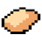
- Вибийте охоронців за допомогою мобільного ключа та штатного ключа та зробіть пластикові ключі після
отримання достатнього інтелекту та нарядів охорони.
- Отримайте чохол для контрабанди або Міцний контрабандний чохол.
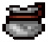
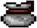
- Отримайте матеріали для Multitool.
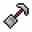
- Отримайте два пиломатеріали для брелока.
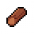
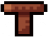
- Отримайте банку з чорнилом та екзотичне перо .